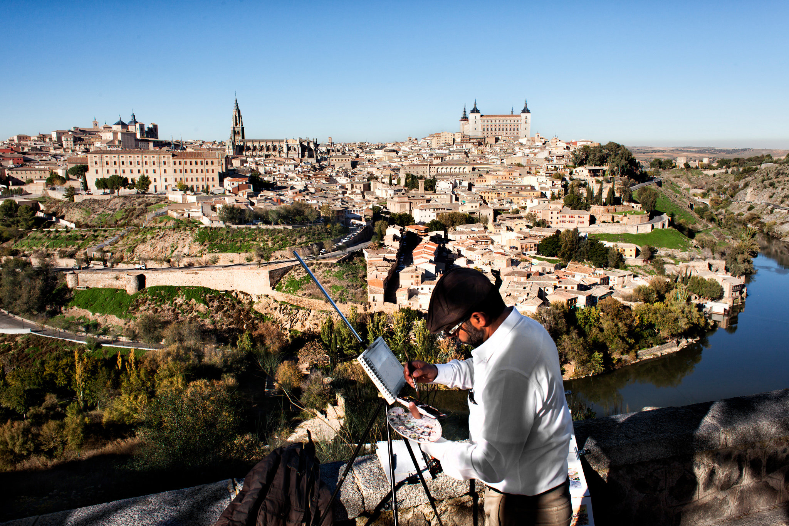

Toledo, situada en el corazón de España, es una joya histórica que cautiva a los visitantes con sus paisajes impresionantes, clima soleado y cultura rica y diversa. Esta ciudad, que combina herencias cristianas, musulmanas y judías, ofrece vistas panorámicas desde sus colinas y riberas, un clima mediterráneo ideal durante todo el año y una arquitectura espectacular, incluyendo la majestuosa Catedral de Toledo y el Alcázar. Con festivales vibrantes y artesanías únicas, cada rincón de Toledo promete una experiencia inolvidable.


El Gazpacho Montego
Las Migas
El Cochinillo Asado
Las Yemas de Avila
Las Rosquillas de Toledo
Las Carcamusas